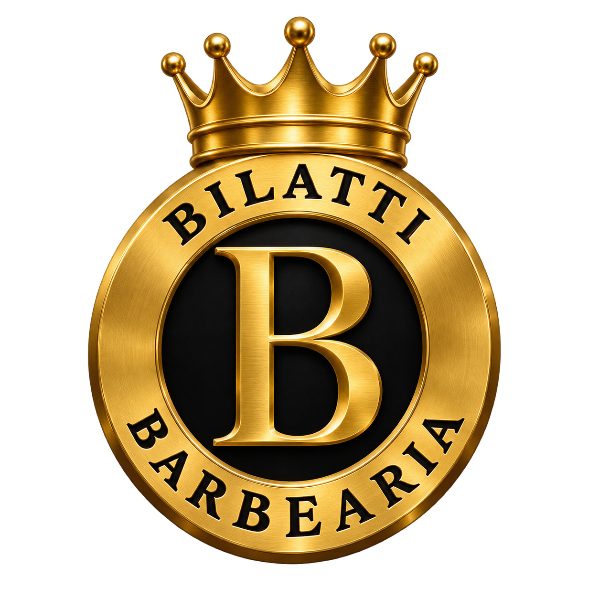
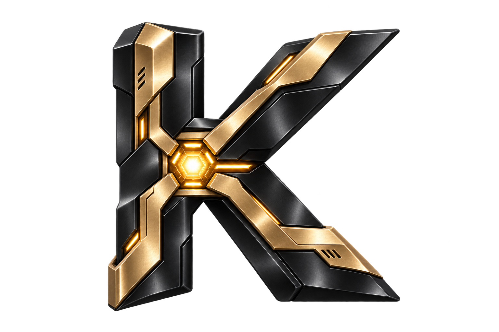

◎ VISÃO GERAL
11 projetos cadastrados
10 com link1 em desenvolvimento
Sites, aplicativos e jogos reunidos aqui.
CRIAR. DESENVOLVER. TRANSFORMAR.

Barbearia BilattiSite institucional · Serviços Garage ShieldDemonstração não oficial
Garage ShieldDemonstração não oficial
Kael SantosSoluções que ganham forma.Explore meu trabalho ↗Proposta: testar conhecimentos bíblicos de forma interativa.
Experiência: perguntas com níveis de dificuldade e referências das respostas.
Jogar agora →Conte sua ideia e vamos conversar sobre uma solução para seu negócio.
Falar com Kael ↗Distribuição dos 11 projetos cadastrados.
Cada trabalho tem uma descrição, uma identidade visual e acesso ao projeto disponível.
Ver todos os projetos ↓Veja as prévias abaixo e abra cada projeto para conhecer todos os detalhes.

Apresentação de aulas e treinamentos de direção para mulheres habilitadas, com informações sobre a proposta do serviço e formas de contato.
Abrir projeto ↗Comparador de cores para avaliação de padrão e amostra. A demonstração permite conhecer a interface sem passar pela tela de login.
Abrir projeto ↗Material digital de colorimetria, formulação de tintas e controle de qualidade para a indústria gráfica, organizado para leitura e consulta.
Abrir projeto ↗Apresentação digital de uma clínica de estética, com informações sobre serviços, profissionais e canais de contato.
Abrir projeto ↗Proposta de site para apresentação de proteção e cuidados automotivos, com foco em serviços, identidade visual e contato.
Abrir projeto ↗Organização de jogos e controle de receitas, combustível, gastos e fechamento financeiro da atividade.
Abrir projeto ↗Site de instrutora de direção com apresentação dos serviços, informações sobre as aulas e contato pelo WhatsApp.
Abrir projeto ↗Apresentação da barbearia, serviços, galeria de cortes e informações para conhecer o espaço e entrar em contato.
Abrir projeto ↗
Ferramenta de sorteios e situações para adicionar eventos e desafios ao modo carreira de futebol.
Abrir projeto ↗Jogo de perguntas sobre a Bíblia com níveis de dificuldade, referências das respostas e desafios para testar seus conhecimentos.
Abrir jogo ↗Projeto de automação residencial em desenvolvimento. A demonstração pública será adicionada quando estiver disponível.
Em desenvolvimento